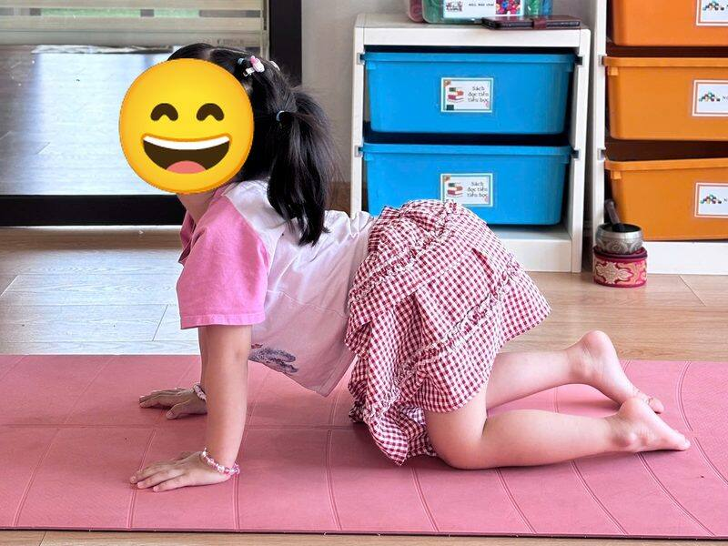
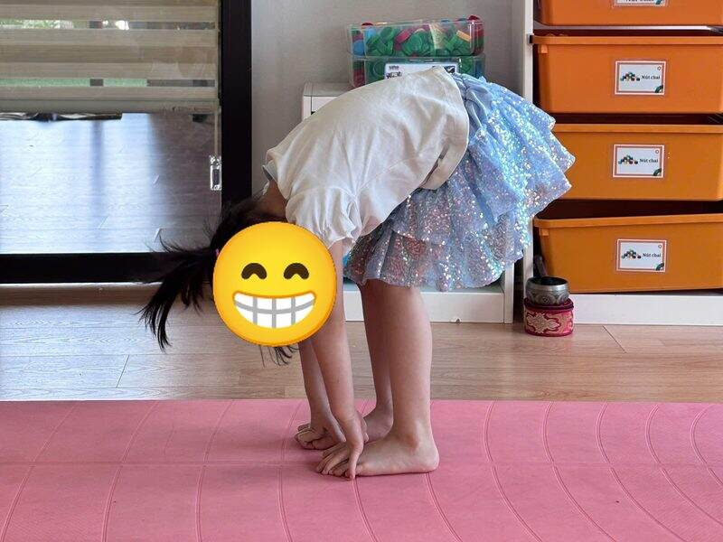
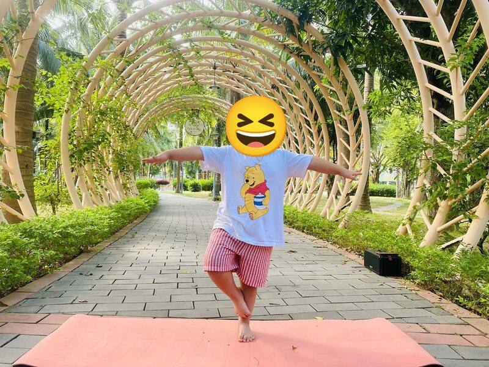

Chủ đề 5 · Halloween
Bí Ngô Tròn không sợ bóng tối
🌟 Bài học trong câu chuyện
Giới luật yoga: Svadhyaya – Hiểu bản thân mình. Bé biết mình đang vui, buồn hay mệt, và nói ra được.
Kỹ năng sống: Gọi tên nỗi sợ, tự làm mình bình tĩnh.
1. Khởi động (2 phút)
Cả lớp ngồi xếp bằng thành vòng tròn. Cùng thở 3 hơi thở bông hoa: hít vào bằng mũi như ngửi hoa, thở ra bằng miệng thật chậm. Chắp tay trước ngực và chào nhau: “Namaste, chào các bạn!”
2. Câu chuyện: Bí Ngô Tròn không sợ bóng tối (kể và tập, 10 phút)
Cô đọc chậm từng đoạn cho bé nghe. Đến chỗ có ô 🧘 thì cả lớp cùng làm tư thế đó, giữ 3 đến 5 nhịp thở, rồi kể tiếp.
Đêm Halloween, các bạn nhỏ hóa trang rất vui. Có một quả bí ngô tên là Bí Ngô Tròn, Tròn hơi sợ bóng tối. Mình cùng giúp Tròn nhé!
Bí Ngô Tròn cuộn tròn trong góc vườn, run run: "Tối quá, mình sợ!" 🧘 1. Quả bí ngô: tư thế Ôm gối tròn
Bạn Mèo Đen đến, cong lưng chào: "Meo! Tớ cũng từng sợ. Bạn thử nói ra là mình đang sợ xem". 🧘 2. Mèo đen: tư thế Con mèo
Bạn Dơi treo ngược trên cành, cười: "Treo ngược thế này, nhìn đêm cũng hay lắm!" 🧘 3. Con dơi treo ngược: tư thế Búp bê vải
Bạn Nhện bò ngang đến dệt lưới. Nhện rất hiền, chỉ bắt muỗi thôi. 🧘 4. Con nhện: tư thế Con cua
Bác Cú Mèo ngồi thấp, mở to mắt: "Ban đêm có nhiều điều đẹp lắm, con thở chậm rồi nhìn xem". 🧘 5. Cú mèo mắt tròn: tư thế Ngồi xổm
Một bạn nhỏ hóa trang phù thủy bay qua. Mình làm máy bay, giữ thăng bằng thật giỏi! 🧘 6. Phù thủy cưỡi chổi: tư thế Máy bay
Một bạn hóa trang bóng ma nấp sau gốc cây rồi bật dậy: "Bù!". Hóa ra là bạn Tí, ai cũng cười! 🧘 7. Bóng ma bé xíu: tư thế Em bé
Dưới ánh trăng, mạng nhện lấp lánh như ngôi sao. Mình dang tay chân thật rộng. 🧘 8. Mạng nhện: tư thế Ngôi sao
Các bạn rủ Tròn đến lâu đài giấy để chơi trò hóa trang. Mình làm mái lâu đài hình tam giác. 🧘 9. Lâu đài: tư thế Tam giác
Tròn đứng thật vững, thở chậm và nói: "Mình hơi sợ, nhưng mình thở chậm là thấy ổn rồi". 🧘 10. Cây trong đêm: tư thế Cái cây
Hết truyện. Bí Ngô Tròn biết mình đang sợ, nói ra và thở chậm để bình tĩnh lại.
3. Hướng dẫn 10 tư thế trong truyện
-
 1
1Quả bí ngô
🧘 Tư thế Ôm gối tròn (Ball)
Bí Ngô Tròn cuộn tròn trong góc vườn, run run: "Tối quá, mình sợ!"
Cách làm: Ngồi hoặc nằm, ôm hai gối sát vào ngực, cuộn tròn người như quả bóng. Giữ 3 đến 5 nhịp thở.
-

2Mèo đen
🧘 Tư thế Con mèo (Cat)
Bạn Mèo Đen đến, cong lưng chào: "Meo! Tớ cũng từng sợ. Bạn thử nói ra là mình đang sợ xem".
Cách làm: Chống tay và gối xuống thảm, thở ra cong lưng lên cao, cúi đầu nhìn rốn. Giữ 3 đến 5 nhịp thở.
-

3Con dơi treo ngược
🧘 Tư thế Búp bê vải (Ragdoll)
Bạn Dơi treo ngược trên cành, cười: "Treo ngược thế này, nhìn đêm cũng hay lắm!"
Cách làm: Đứng gập người, gối hơi chùng, hai tay ôm khuỷu tay, đung đưa nhẹ. Giữ 3 đến 5 nhịp thở.
-
 4
4Con nhện
🧘 Tư thế Con cua (Crab)
Bạn Nhện bò ngang đến dệt lưới. Nhện rất hiền, chỉ bắt muỗi thôi.
Cách làm: Ngồi, tay chống phía sau, bàn chân chống trước, nâng hông lên rồi bò ngang. Giữ 3 đến 5 nhịp thở.
-
🐈5
Cú mèo mắt tròn
🧘 Tư thế Ngồi xổm (Garland)
Bác Cú Mèo ngồi thấp, mở to mắt: "Ban đêm có nhiều điều đẹp lắm, con thở chậm rồi nhìn xem".
Cách làm: Ngồi xổm, hai gối mở rộng, gót chân chạm sàn nếu được, hai tay chắp trước ngực. Giữ 3 đến 5 nhịp thở.
-
🕸️6
Phù thủy cưỡi chổi
🧘 Tư thế Máy bay (Warrior 3)
Một bạn nhỏ hóa trang phù thủy bay qua. Mình làm máy bay, giữ thăng bằng thật giỏi!
Cách làm: Đứng trên một chân, nghiêng người về trước, chân kia duỗi ra sau, hai tay dang như cánh. Bé có thể vịn tường. Giữ 3 đến 5 nhịp thở.
-
🦇7
Bóng ma bé xíu
🧘 Tư thế Em bé (Child's Pose)
Một bạn hóa trang bóng ma nấp sau gốc cây rồi bật dậy: "Bù!". Hóa ra là bạn Tí, ai cũng cười!
Cách làm: Quỳ gối, ngồi lên gót chân, cúi người cho trán chạm thảm, hai tay duỗi ra trước hoặc để xuôi bên người. Giữ 3 đến 5 nhịp thở.
-
 8
8Mạng nhện
🧘 Tư thế Ngôi sao (Star)
Dưới ánh trăng, mạng nhện lấp lánh như ngôi sao. Mình dang tay chân thật rộng.
Cách làm: Đứng dang rộng hai chân, hai tay dang chéo lên cao, cả người thành ngôi sao năm cánh. Giữ 3 đến 5 nhịp thở.
-
 9
9Lâu đài
🧘 Tư thế Tam giác (Triangle)
Các bạn rủ Tròn đến lâu đài giấy để chơi trò hóa trang. Mình làm mái lâu đài hình tam giác.
Cách làm: Dang rộng hai chân, một tay chạm ống chân, tay kia vươn thẳng lên trời. Đổi bên. Giữ 3 đến 5 nhịp thở.
-

10Cây trong đêm
🧘 Tư thế Cái cây (Tree)
Tròn đứng thật vững, thở chậm và nói: "Mình hơi sợ, nhưng mình thở chậm là thấy ổn rồi".
Cách làm: Đứng một chân, bàn chân kia đặt vào bắp chân hoặc đùi (không đặt lên đầu gối), hai tay chắp trước ngực hoặc vươn cao. Giữ 3 đến 5 nhịp thở.
4. Thư giãn (2 phút)
Các con nằm ngửa, tay chân thả lỏng, nhắm mắt lại. Cô nói nhẹ: “Hít vào thật chậm… thở ra thật chậm… Con nhớ lại câu chuyện vừa rồi, nhớ người bạn mình thích nhất trong truyện. Cơ thể con mềm như bông, nhẹ như mây.” Sau đó các con nghiêng người, từ từ ngồi dậy.
5. Trò chuyện cùng bé (1 phút)
Bí Ngô Tròn biết mình đang sợ, nói ra và thở chậm để bình tĩnh lại. Hiểu cảm xúc của mình là Svadhyaya.
Cô hỏi các con:
- Con có sợ điều gì không?
- Khi sợ, con có thể làm gì để thấy ổn hơn?
Kết thúc bằng lời chào “Namaste” và một nụ cười.
Lưu ý cho thầy cô và bố mẹ: Tập trên thảm, không tập ngay sau khi ăn no. Bé chỉ làm tới mức thấy dễ chịu, không ép bé. Tư thế đứng một chân có thể cho bé vịn tường hoặc vịn tay người lớn.